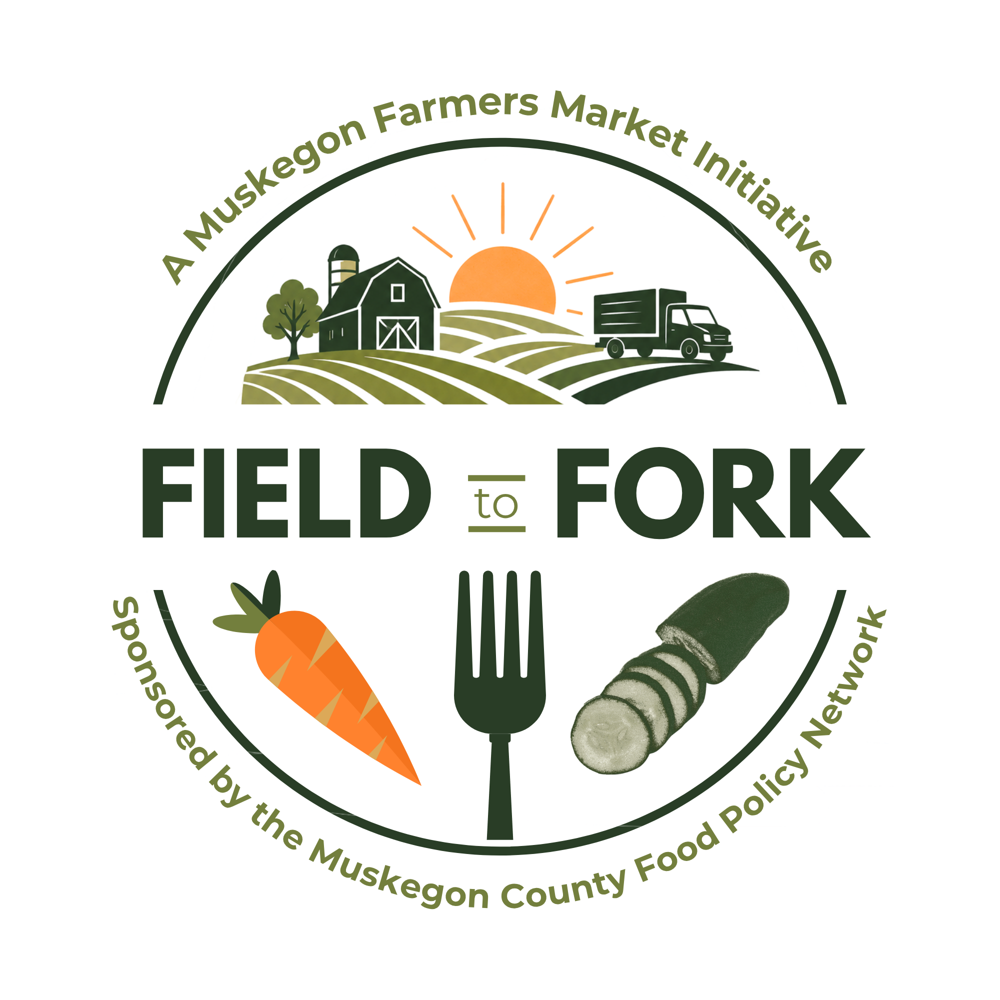

Connecting Local Farms with Local Tables
We're bringing together local farmers and food buyers (chefs, caterers, institutional buyers) in Muskegon County for a farm fresh meal and a guided conversation on how to make buying local easier for everyone.